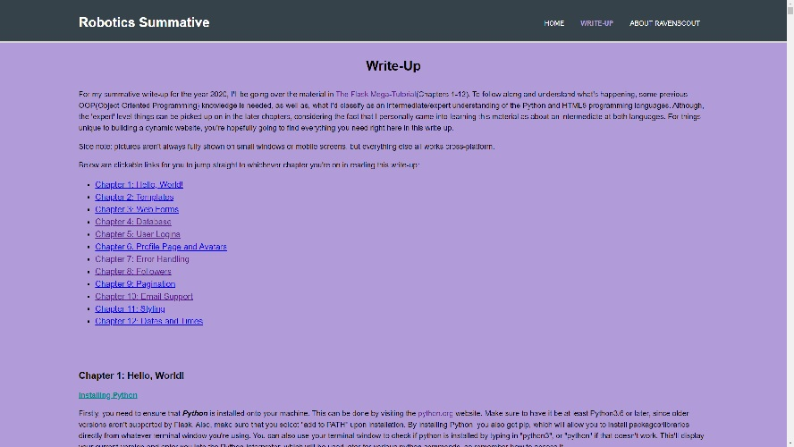
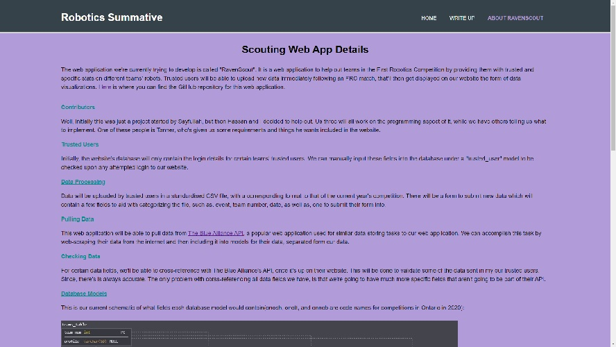

Robotics Summative Website
This website of mine was built to explain my robotics summative. All details can be found on the website itself at this link.
It's for this reason, that I won't be going over the materials found in that guide in this website. However, I will go over its 3 pages.
HOME
This home page goes over what the website is about since it's not a usual subject to write a summative on for the Robotics course. It went over details about the website itself, and the technologies learned and went over for the summative project itself. This is going to sound confusing unless you were to actually go over and read it all
WRITE-UP
This content page is the write-up itself. It includes 12 so called 'chapters' of me going over how to build a dynamic web app using different technologies such as Python and Flask, to mention a couple. There are hyperlinks included at the top of the page to direct you down to whichever chapter you'd like to read. You can see the layout below: 
ABOUT RAVENSCOUT
This information page goes over the robotics summative project, and our plan for the web application being built.
This image below will show you how it looks: 
Curriculum Addition
This website of mine was actually added to the curriculum of our Robotics course on Schoology. This being the Learning Management System used for some of the technology courses at LDH. Here is a picture of it being there:

How It's Hosted
This website is being hosted by Netlify for free.